I was sitting in a meeting with the mayor of Washington, D.C. alongside my friend. We had been invited to speak with him as a result of our involvement in building the area's technology community.
He was looking for ideas to grow the image of D.C. as a center for innovation. During the meeting both myself and my friend threw out ideas which received a great response from the mayor.
When I returned home, I sent a follow-up email to the mayor with nothing more than "Great meeting you! I look forward to helping you out and hope we can work together on the ideas I mentioned." Those aren't the exact words but it's effectively what I sent over.
My friend on the other hand put together a proposal.
He created an idea for an event that would require the backing of the city (very similar to my idea) and presented it. Soon enough he had obtained the support of the city.
I on the other hand, was no further along with my own ideas. What went wrong?
I didn't make an offer.
I can't tell you how often businesses get the opportunity to get a client and they don't present an offer. They just shake hands and move along with life.
The foundation of all effective marketing and sales is presenting an offer.
In the world of digital marketing, the most basic of offers is the lead magnet.
A lead magnet is an offer of an informational resource that's provided in exchange for an individual's contact information. They are created for the sole purpose of converting anonymous visitors to your website into leads.
Take a look at any average small business' website and you'll notice that there is typically nothing more than a "Contact Us" form.
High performing businesses know better. They consistently present offers to their visitors.
You cannot grow a business without making offers.
While there is a range of offers that you can make to a visitor on your site, this article is entirely focused on free offers. These free offers are the foundation of building your email list.
Many people will begin their online marketing journey by writing free blog posts and producing other free content. While not a complete waste of time, it's practically useless without a lead magnet.
So what types of lead magnets can you provide and what should they be about? This article outlines every type of offer you possibly think of.
Selecting A Topic
While your lead magnet depends completely on what your customers want, getting insight into their desires depends on your existing content platform.
Have A Content Archive?
Do you already have multiple blog posts on your site and decent traffic? If so, you can simply check out Google Analytics and see what's popular. Then, all you need to do is pick a top performing article and turn it into a guide.
Don't Have Existing Content?
If you don't already have a huge content archive, no worries. You can still come up with lead magnets two ways.
Customer Conversations
The way to generate ideas for what to giveaway is by speaking with your customers. If you have a sales team or happen to be doing sales yourself, you already know what questions customers ask.
Monitoring The Competition
Don't have a massive archive of content or a bunch of customers? No worries. It's time to do some basic competitive analysis.
- Go to SemRush.com or Open Site Explorer and find out what's working on your competitors' sites. You should be able to figure out their top performing keywords and lead magnets that they are currently using.
- Visit http://keywordtool.io/ and type in the top 5 topics that you came up with during your competitive research.
- Take what should now be a very large list of keywords and type them into Google Trends or Google Keyword Tool to find out search volume.
- Pick one of the topics and go with it! It's really easy to get hung up on the research phase.
Once you've come up with your topic, it's time to figure out how to package it. Below is a comprehensive list of all the free offerings that you can present.
Types Of Lead Magnets
Toolbox
This is one of my absolute favorite lead magnets to create as it's incredibly simple to make. All you need to do is literally organize a list of resources that are related to the subject matter you are focusing on.
Michael Hyatt created his own list of resources that he uses for his business. The result is a toolbox PDF that lists 99 resources.
The team over at WPCurve have a similar offer but rather than a PDF document, they created an assortment of tools. It includes a number of Google Docs and Trello boards.
This approach provides the reader with access to the internal processes that you have created within your organization.
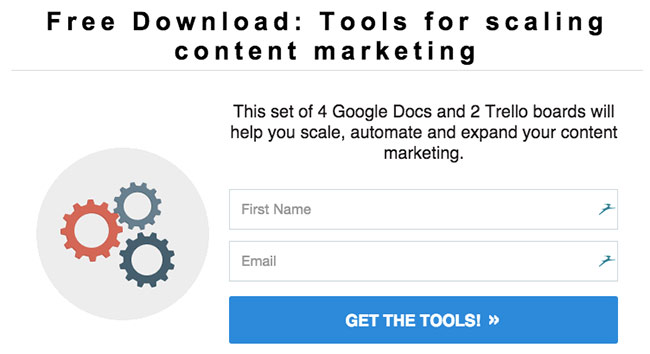
Fortunately, you likely already have these resources and could quickly make them generic for others to use. The main key to "toolboxes" is to provide your audience with an inside look at your business processes.
Since you already know how you run your business, compiling a list of resources requires practically no time at all. While you can invest a bunch of time in designing the deliverable, keep things basic to begin with.
List Of Resources
In addition to a toolbox which is a list of tools related to a specific topic, a list of resources is also incredibly valuable.
The distinction I'm making here between "resources" and "tools" is that resources could be a blog, a YouTube video, an article, a book, or anything else. Essentially the resources are there for your reader to continue their educational journey.
An example would be "The 10 Books That Transformed My Life And Will Transform Yours". Compile the books into a document and make it available for download!
Webinars
Webinars are probably one of the single best methods for generating new customers and leads. However there's one downside of webinars: they take more effort to plan.
If you don't yet have something to sell, webinars can be a waste of energy. However if you already have a product that costs $500 or more, this is one of the best strategies.
People absolutely love free educational seminars. Perhaps one of the greatest reasons they work so well is that they take more effort to develop.
Lewis Howes is one of the leaders in developing effective webinars.
He uses webinars to sell his "webinar success" program and it works incredibly well. If you have something to sell right now that's $500 - $1500, then I highly suggest you start off with a webinar. Otherwise, keep webinars in the back of your head at a minimum as they can transform your business.
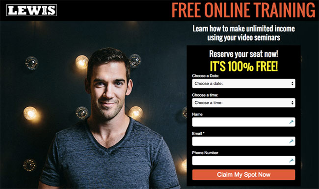
Drip Email Mini-Course
Creating a drip e-mail course is incredibly challenging to get right the first time around. The greatest problem with them is that they don't provide instant gratification.
Drip-courses are basically the opposite of instant-gratification. However there are plenty of success stories with these. Steve Chou, the founder of My Wife Quit Her Job, generates over $350,000 a year from his free drip campaign.
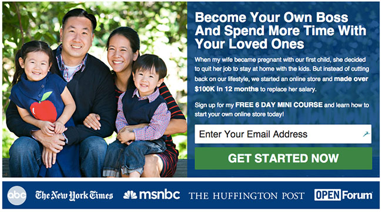
If you are using your drip-email sequence to sell something, keep these things in mind:
Leverage open loops
The most significant challenge for successful drip e-mail courses is that people stop reading them. Andrew Chaperon is a successful online marketer who packaged the solution into something called the "soap opera sequence".
The main concept here is that you want readers to "tune into the next episode" of your series just like a soap opera. This is accomplished through story lines that you begin in one email and end in another.
It's also known as "open loops".
Add your personality
Most people mess this up (I know I surely have). For most of us, we think that subscribers to our course just want to be educated. In reality, they want to connect with you.
Yes, it's important that you teach your readers something, but personal stories will make them more likely to stick around. This is especially the case for stories that your audience can connect with.
Add more calls to action
One final piece of advice on e-mail drip sequences is that you need to drive your subscribers to take an action. Do you want them to buy a product or service? Give them multiple opportunities to do so!
Video Mini-Course
In contrast to a drip-email campaign, where the content falls within the email, video mini-courses are just a series of videos. Whether you deliver it all at once or spread out the lessons over time is up to you.
Also, the quality level of such videos is completely up to you. Many information marketers leverage video mini-courses as a core component of their product launches.
The most common sequence currently is three informational videos that lead up to the official launch. Derek Halpern, the founder of Social Triggers, offers a free video mini-course for the product launch of his Blog That Converts course.
These videos are released over the course of a few days rather than all at once.
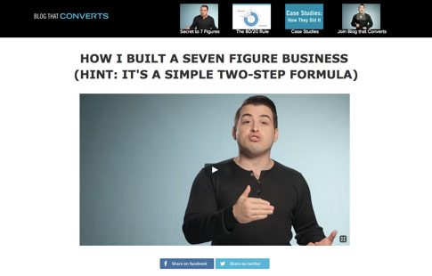
In Derek's case, each video is nearly 20 minutes long. This is a massive investment of resources to create such a series. That's why it's focused entirely around selling a course (so he can make back his investment on marketing material).
Bryan Harris of VideoFruit created the High Jump Formula Mini-Course which is three videos, each of which are less than 5 minutes in duration. In his case, he was able to make the videos in 30 minutes since there's no editing.
How To Create A Basic Video Mini-Course
If you want to create a simple video mini-course, I'll provide a quick overview of how you can churn one out in a short period of time.
Step 1: Create An Outline
In Brian's course, he splits things up into three segments: two tutorial videos and a question and answer video. Each video should have no more than 1 lesson that you want to teach. Each lesson can contain up to 4 key takeaways.
Step 2: Record The Videos
Once you create your outline, all you need to do is record. Rather than heading into the video studio, you can throw together a great looking video series through screen recording. I personally love Screenflow for recording videos. It's incredibly easy to use and produces high quality video.
Step 3: Publish The Videos On A Protected Page
Which video hosting provider you choose doesn't really matter for the most part. The main thing to keep in mind is that you should lock the video to only be embeddable on your site and nowhere else.
There are three strategies to locking/protecting your content:
- Password protected page - This is the easiest. All Wordpress pages can be password protected. When the visitor enters their email address, you can just send them the password for the page. While you risk them sharing the password with others, it's really not that big of a deal.
- Members only area - Personally, I'm only a fan of having a members only area, if you plan on providing premium/paid content within it. Otherwise, configuring a members area can quickly require excess effort.
- Security through obscurity - This is probably the worst strategy but it's incredibly easy. Rather than making a URL that looks like "https://www.holler.com/free/my-awesome-course", you can create a URL like "https://www.holler.com/lp/adfas023-1234n". Nobody will be able to guess that!
How-To Video
Don't want to create an entire course? Make it easier on yourself and create a single video. Download Screenflow or another screen recording software and teach your audience how to accomplish a task relevant to your audience.
Once you record it, you can make a private YouTube video or upload one on Vimeo. Next, create a protected page on Wordpress and you're good to go!
Interestingly enough, I rarely see people use how to videos as lead magnets. However a quick 3 minute video is something you can create incredibly fast.
While it doesn't require an email, Business Insider has this call to action at the bottom of one of their articles:
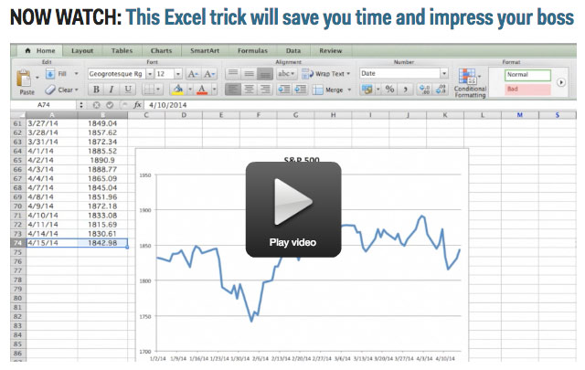
Since the company generates most of their revenue from web page impressions, and not via email, they make it freely available. However if they did require an email, I can just about guarantee a ton of people would provide it.
If you want to check out the video, you can watch it here.
E-Books
While there are numerous types of free e-books, the most successful ones explain how to do something. For example, take this one from Hubspot:
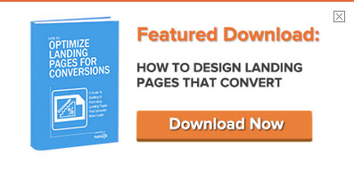
The e-book is incredibly relevant as it's promoted on an article about great landing page designs.
Take note of how Hubspot avoids calling this an "e-book" and instead goes with "Featured Download". I've found that many people have a negative connotation to the concept of an "e-book".
Whether you choose an e-book or a longer e-mail course depends on your own objectives and more importantly your audience's preferences. Fortunately, once you've written a how-to guide, you can always repackage it numerous ways.
Reports
Personally, I don't like the word "report" as much as I like the word "course". That's because "report" doesn't necessarily imply that you'll learn something.
It reminds me of something I'd read from a PHD student.
Fortunately, you can package it differently just by changing the title. Would you rather read "A Quantitative Analysis Of Internet Firms' Sales Processes" or "How These 5 Startups Quadrupled Their Sales"?
My guess is the latter. If you went with the quantitative analysis option, go back to graduate school! There's definitely exceptions to this strategy though.
Mattermark, for example, offers a "Startup Traction Report" which visitors originally were able to pay an optional amount for.
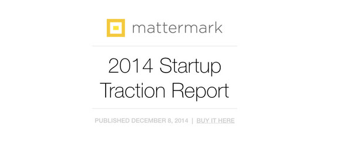
While it now has a set price, the concept of optional pricing is a great way to both offer value and potentially pre-qualify paying customers.
The downside of reports is that they require a decent amount of effort to produce. The upside is that this effort is rewarded with an improvement in your positioning in the market.
Don't turn to these as your first lead magnet though. You should start with something much simpler.
Article As A PDF
I absolutely love this strategy. If for whatever reason you don't have enough time to create a lead magnet, just print the article and place it in a PDF. This is the single best fallback.
While you can use Google Docs for creating a document, I suggest you consider formatting it in Apple Pages or Microsoft Word. Once that's done, you just need to add a link that says "Download a free copy of this article as a reference."
Why does this work? If you write an incredibly long article, having a PDF that the person can reference is incredibly valuable. Additionally, they can attach the guide to an email and pass it on to their friends.
Here's how HelpScout does it on some of their longer articles:
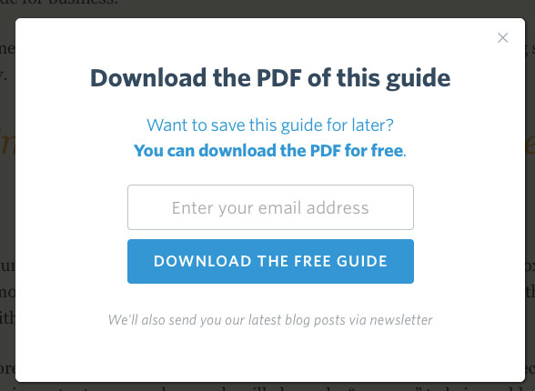
Coupons
Probably the single best strategy for generating more customers, especially in e-commerce, is coupons. When I visited West Elm's website, I was prompted with the following offer:
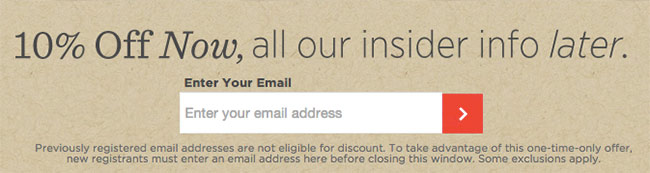
If you are spending hundreds of dollars on furniture, providing your email for a coupon is a no-brainer. It's an incredibly effective bribe.
Do you not own an e-commerce site? I have an alternative system for you. Head over to Coupons.com or RetailMeNot.com and pick the coupons of products that are related to your industry.
Now when you drive traffic to your site, you can simply package a coupon code in exchange for the visitor's email address. Afterwards, just redirect them to the relevant website.
One other company that does coupons effectively is New Egg, who has the following promotion on their homepage:
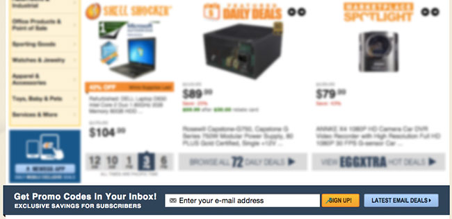
While essentially the same as a coupon code, it shares something else in common with the West Elm promotion: implies ongoing emails. Neither were just a single offer. Instead, they provide ongoing "deals", "savings", "discounts", and more.
Free Shipping
I should say up front that free shipping can hurt your business. If you have a bunch of cheaper items or your margins are tight, you risk creating losses with such promotions.
Assuming you have made the proper calculations, go for it! Most e-commerce sites that I've seen, provide the discount code front and center rather than requiring an email address.
Take a look at the Shutterfly promotion as an example:
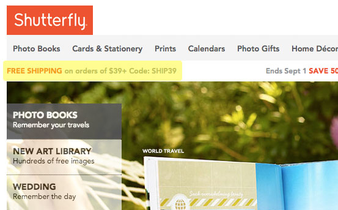
While requiring an email address for a discount may piss some buyers off, the vast majority will gladly enter their email to save some money.
Free Software Download
While free desktop software isn't as popular nowadays, there are still plenty of pieces of software people would love to download. The most obvious examples would be Wordpress Plugins and Wordpress Themes.
ThemeArt provides wordpress themes in exchange for a share.
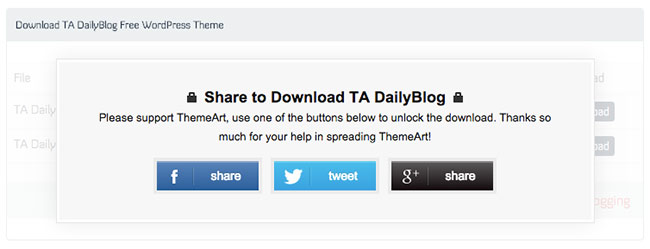
While I'd rather provide my email address for a Wordpress Theme, it clearly illustrates how their visitors are willing to put up with a small bribe.
Another example of free software is Bryan Harris' List Goal product. After installing the Google Chrome plugin, users are prompted to create an account. One of the features of the software is an automated email coach which of course, comes through your inbox.
Again, this is a lead magnet which requires a more significant time investment, so typically I don't recommend starting off with it. The only exception would be if you're a developer.
Natasha of NatashaTheRobot put together an incredibly targeted offering for her audience of Swift developers.
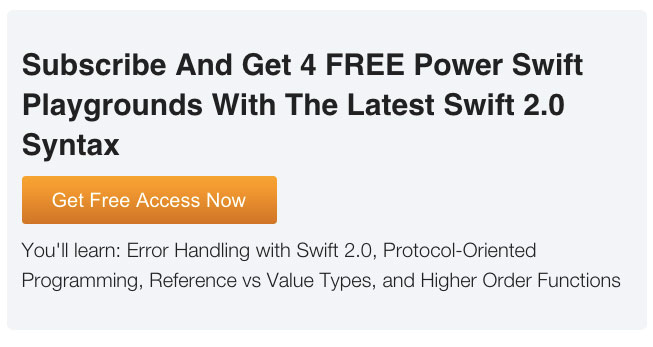
Given that her audience is Swift developers, providing software is a natural fit.
Free Trial
A large number of software as a service companies will offer a 30-day free trial of their product. This is probably one of the best lead magnets that exist as it drives potential customers towards a purchase decision.
The downside? The potential customer may just be window shopping. In that case, they may delay their trial until they are ready to begin testing each product.
One option for converting window shoppers to free-trials is by making the trial unlimited in duration. This is exactly what a "Freemium" strategy is.
There are numerous risks with freemium products. The most significant of which is that the majority of users never become paying subscribers. The result is that like Evernote, you wind up paying for resources to support the free users.
Whether or not you decide to go with an unlimited trial or not, you can always start with a test and see how things end up. Adobe loves to use free trials to get users hooked on their software. Here's the free download page for Photoshop:
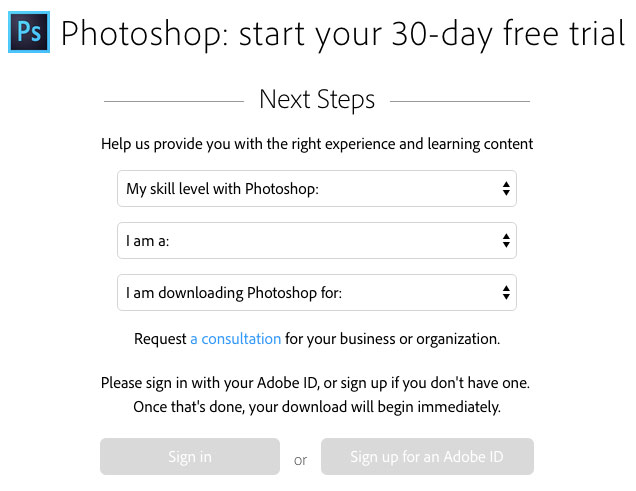
Free Newsletter
Probably the single most common type of lead magnet on the internet is a newsletter subscription. The promise to the end user is that you will continuously provide free content.
While you end up providing a ton of value, getting access to a "Free Newsletter" is not exactly a benefit rich call to action. Despite this, plenty of publications still leverage this technique.
Here is the subscription form from TechCrunch:
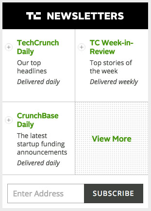
Here's Business Insider:
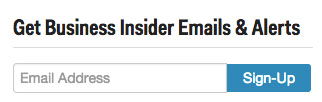
While they work, it's incredible that some of the largest internet publications still use such weak calls to action.
The problem with these is that not every article on a site is created equally. If I ended up on an article that I didn't enjoy, why would I want to provide my email address?
Granted, top publications try to create a habit of visitors returning multiple times throughout the day. For them, email subscriptions are not the number one priority.
However any growing publication should prioritize email subscriptions.
If you are completely out of ideas (and the other 20+ ideas on this page are of no interest), then this is always better than nothing!
In case I just made you feel horrible for this path, I'm here to cheer you up! Hubspot, one of the most successful inbound marketing companies, leverages the newsletter subscription option on some of their blog posts:
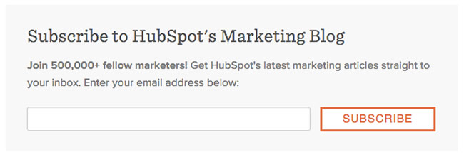
One key to success here is that HubSpot includes social proof in their call to action by sharing how many people subscribe to their blog. I highly recommend doing the same once you get over a few hundred subscribers.
Insider's Club
The most obvious improvement to a generic newsletter subscription is a call to action that says "Join Our Insider's Club". It implies that there's something beyond just signing up for a newsletter.
Some individuals have taken this a step further and create a Facebook group or private Slack network that subscribers can join. One example of this is the "Online Geniuses" Slack community.
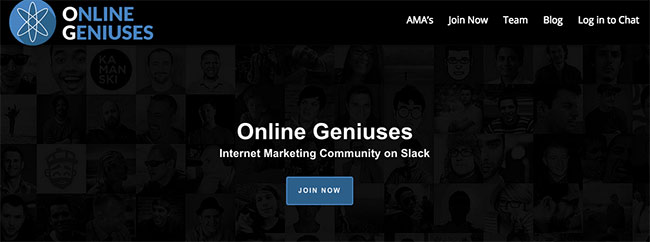
It's free to join but requires a name and email address for applying. A number of quick tips with this strategy:
Don't Over-Segment Your Audience
I have seen a number of publications create multiple Facebook groups. The result has been a dilution of community activity. The same rule applies to Slack: don't create an excessive number of channels at the beginning.
Early on you need as few channels for discussion as possible. If you launch a forum and have 40 high level topics, it will end up looking completely empty. Instead, start with a single channel and expand as needed.
Pull Community Discussions Into Your Newsletter
While Facebook and Slack are particularly great channels for keeping engagement high, don't forget to leverage your newsletter to drive subscribers back to conversations.
Discussions also tend to serve as great inspiration for blog posts, emails, and more.
Assessment
One of the most popular examples of a successful assessment tool that I'm aware of is Hubspot's Marketing Grader. Despite having grown to hundreds of millions of dollars in revenue, this tool still remains as Hubspot's top source of inbound leads.
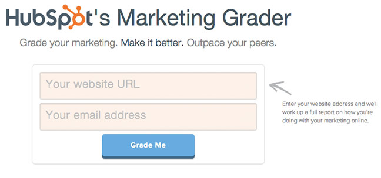
Visitors are prompted to enter their website and email address in exchange for a relatively comprehensive analysis of their website's marketing. This strategy fits into the broader "tool based marketing" category.
Rather than delivering a static e-book or report, tools like Hubspot's Marketing Grader provide personalized results which is far more enticing.
Frankly, there's one challenge to tool-based marketing: you need development resources to create automated assessments. If you don't have such resources though, don't despair!
You can always create a written assessment in which the answers to each question determine someone's score. I'm sure you've taken an assessment where at the end of it there's something that says "Add X points for all the A answers, Y for all the B answers, etc."
Using survey or form software like Survey Monkey and Typeform make it quick and easy to develop quizzes and assessments.
While the time required for tool based marketing software is significant, they can generate absolutely massive results.
Wizards
No, I don't mean the type with a pointy hat. Every time you install an application on your computer you are taken through an "install wizard" that places the necessary files in the proper place on your computer. They also check to ensure that you have all the required dependencies installed.
I don't expect you to create one of those! Just make your reader's life easier. That's what the term Wizard implies.
Infusionsoft created the Email Series Wizard to help participants develop their first email drip campaign. Given that Infusionsoft sells email automation software, it's perfectly aligned with their brand.
The wizard operates just like a mad lib where you simply fill in fields with details of your business and the output is an email series.
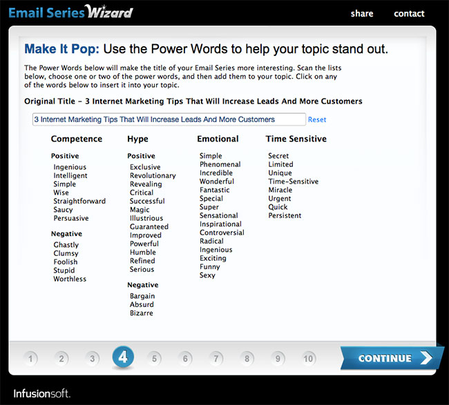
Just like assessments, this is another example of tool-based marketing. In both instances, the tools operate as assistants for the end user. Provide your email and some basic information and you end up with information that can help improve your business.
Google surveys and Survey Monkey are probably the best options for generating a wizard like this one.
Trending Alerts
Comparable to tool based marketing is the concept of "trending alerts". Fortunately, these alerts can be both automated or manual (for non developers). Seeking Alpha creates a system for segmenting email subscribers for "real-time alerts".
Every time an article is written about a company that the subscriber is interested in, it's immediately sent to their inbox. This results in a much more targeted experience for the end user.
While I'm not sure how automated Seeking Alpha's email system is, anybody with a basic email service that allows for segmentation can accomplish this.
What's interesting is that the subscriber doesn't receive something immediately. Instead, they'll receive an email once a relevant alert occurs. In other words, they are providing their email in exchange for a promise.
While it may be enticing to make wild promises that easily attract new subscribers, broken promises are not a great way to build relationships.
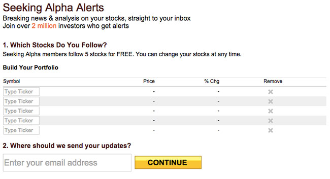
Want to create your own alert system? You'll need to have email software that supports tagging. Then use a tool like Zapier to connect your publishing platform to your email software.
Every time you publish an article with a specific tag or category, you can then automatically email the article to those who signed up for alerts.
Spreadsheet
In his awesome guest post on OkDork, Nate Desmond outlines a robust strategy for competitive content research. A the end of the post is the exact spreadsheet he used to analyze the OkDork website.
This is a great example of having a highly targeted offering versus a more generic site-wide offer. This distinction is what makes this specific offering a "content upgrade", something I dive into more detail in the guide, "10 Steps To An Incredibly Powerful Lead Magnet".
Justin Brooks, who is one of the top experts on ad buying, offers his visitors a "Free Spreadsheet With 202 Website Traffic Sources". While I can predict the top 5 most powerful traffic sources (Google, Facebook, YouTube, Twitter, and newsletters), it's a perfect offering for his clients who want more traffic.
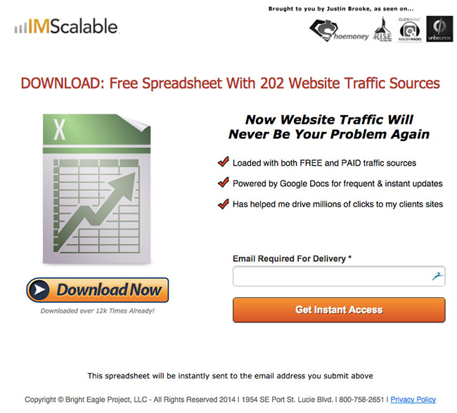
One major distinction between these two spreadsheets is that one is a tool, versus the other is essentially just a list of traffic source. While delivering a list as a spreadsheet makes a lot of sense, making a spreadsheet-powered tool is far more powerful.
Unfortunately, creating a spreadsheet tool from scratch isn't exactly the quickest process. Instead, you create the spreadsheet for your own business, and then share it with your audience.
Checklist
One of the most powerful lead magnets is a checklist. While incredibly simple, it can save the reader an immense amount of time. Most people don't want a huge instruction manual that they can reference. Instead, they prefer to have simple references.
The checklist satisfies this need. So what do you place in a checklist? Here are a few ideas.
Convert A How-To Article Into A Checklist
If you've created a massive 3,000+ word how to article on a specific topic, save your readers time by converting it into a checklist.
Create A Business Process And Share It
Is there a repetitive process that you use inside your business each day? Share that process with your readers. Sweet Process, a software which ironically enables their customers to store business process (like a checklist), offers a systemization checklist.
In other words, their checklist is about their checklist software! Yes, very meta.
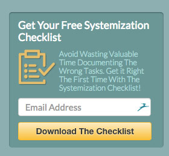
Create A Niche Bucket List
Rather than tasks someone should accomplish, why not present them with must-see or must-experience destinations or activities?
Mind Map
While I've seen few large organizations provide lead magnets to their audience, information marketers are notorious for offering these. There is a wide variance in quality of mind maps that I've seen.
Some are delivered as a presentation, such as this ad technology landscape presentation. More common is a simple downloadable PDF that's produced with one of the many mind map software programs currently available.
The top mind map programs are Xmind, Freemind, and Mindjet. The team at Game Changer Profits created a mind map to outline all aspects of their webinar sales funnel.
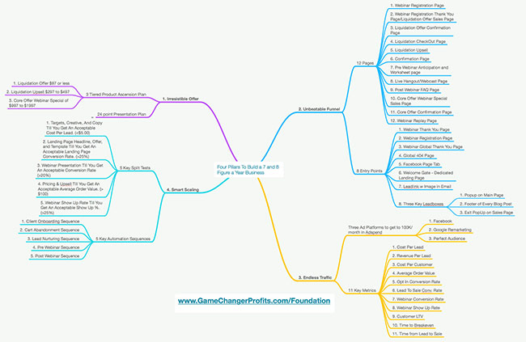
The benefits of mind maps is that you can condense a lot of disperse information into a single diagram. It can operate as an upgraded checklist among other things.
There's a good chance you already have a bunch of notes surrounding your own personal expertise. Share those in a mind map!
Process Flow Diagram
Similar to Mind Maps are process flow diagrams. Just as they sound, process flow diagrams outline all the steps in a given process. The highly experienced team over at Traffic Genesis developed a process flow which outlined Facebook marketing funnels.
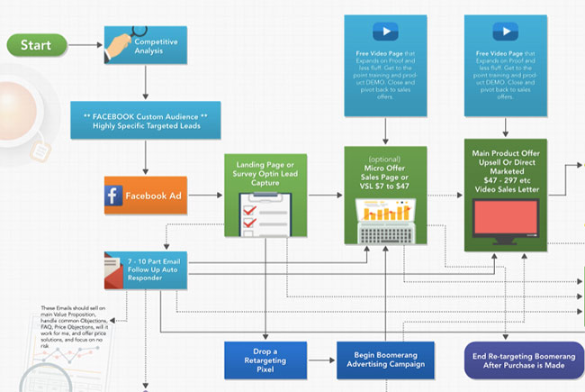
I've also seen Frank Kern white board an entire process flow during a 2-hour long webinar (yes, a whole 2 whopping hours). Process flow diagrams can offer an immense amount of value as they take a complex system and condense it into a single image.
Anything that you can offer that simplifies complex ideas is always a great way to provide value to your audience.
Want to create your own process flow diagrams? Check out Draw.io which is completely free.
Swipe Files & Scripts
Anybody in direct marketing or copywriting is already familiar with the concept of a swipe file. A swipe file is essentially a collection of proven titles or sales letters.
You can then use them to generate new content. Pretty much every information marketer out there offers swipe files for their audience as a value offering. Brian Dean of Backlinko offers scripts that you can steal for doing content promotion.
This post from Brian illustrates a number of emails that his friend used to promote an article. The reader can steal it for their own use!
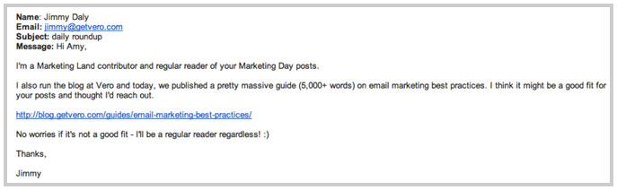
Fortunately, swipe files and scripts are incredibly quick to generate as you likely already have them. If you don't, you can easily swipe content from other people and make it your own!
Template Files
Have you ever gone searching for a template for a powerpoint presentation, word document, or something else? I know I regularly look for resources I can use to beautify my content.
The team over at Indesign Secrets offers a number of free templates to readers that they can use for creating their own Indesign projects. All that's required? You guessed it … an email address!
Their templates include books, brochures, business assets (like business cards) and more. While the average person will take a long time to generate templates, designers can (relatively) quickly mock something up for their audience.
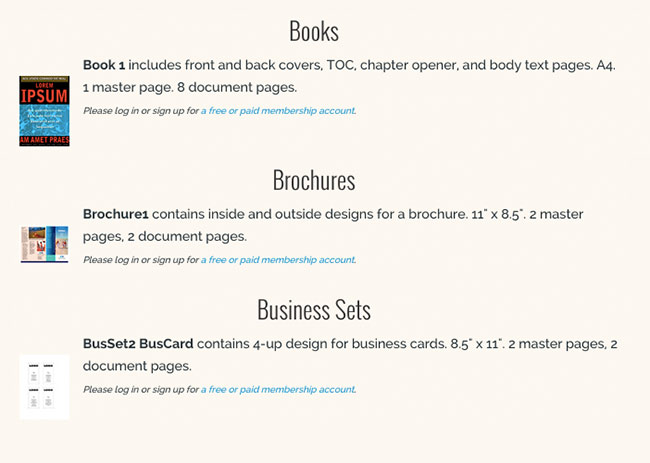
Interview Summary
If you host a podcast, written summaries are a great addition. For those that don't have the time to listen to entire interviews (most of us), downloading a quick summary can be priceless.
Most podcasts that I listen to will publish the entire transcript. However reading a transcript isn't much faster than listening to the actual show. Put together the key points in the interview into a downloadable PDF.
For my own podcast, I provided a summary for one of my interviews and titled it "How To Host Million Dollar Events". If you hadn't listened to the episode, you could have quickly scanned through the guide.
Fortunately, if you are editing the podcast, you'll already know what's included in the episode. Listen through it once, take notes, and put those notes in a document.
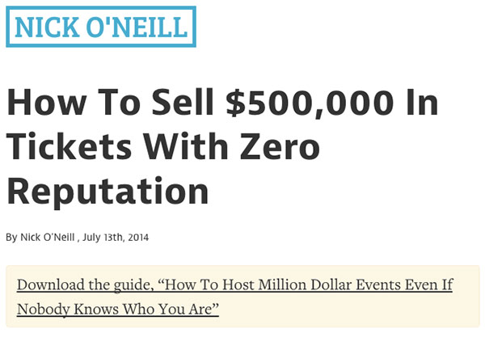
Archived Interview Access
If you sell access to content through either membership areas or conferences, you can provide access in exchange for an email. Mixergy is a great example of this.
They publish multiple interviews a week which are then locked into a premium membership area. If you visit one of the locked interviews (like the one pictured below), the video play button results in a pop-up which prompts for your email.
While this lead magnet isn't for everybody, locking off previously freely-available content can work incredibly well. Best of all, it takes practically no time at all.
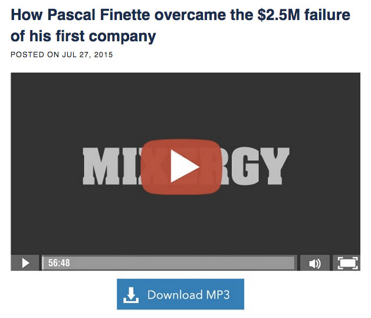
Free Consultation
Consultants frequently generate new leads through free consultations. Whether it's a "free strategy session", a "free coaching call", or something else, free calls are a great way to get more insight from your customers.
Since many consultants abuse these calls and spend a lot of time pitching their services, it's important you clarify what will take place on the call. Ideally you would provide some form of outline.
One major downside of these calls is that unqualified buyers can suck up a lot of your time. When you are just starting I don't recommend offering free calls unless you are really good at closing. Your time is precious and spending all day on free calls can destroy your business.
My friend Sachit offers "free strategy sessions" to people who land on his site.
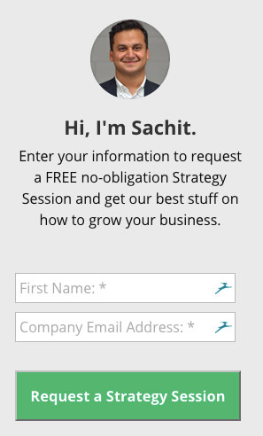
Contest Giveaway
Targeted giveaways are a great way to generate targeted leads. The key to success is putting together a package that's incredibly relevant to your audience. The team over at The Hustle created a giveaway for Neville Medhora's Kopywriting Kourse.
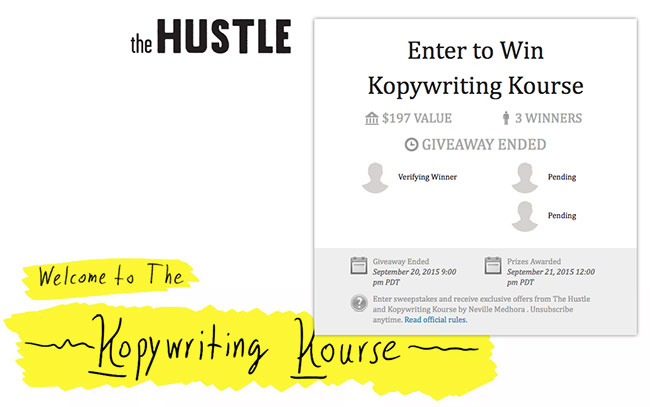
While most people don't know of Neville Medhora, those who do fall within The Hustle's target audience. Setting up a giveaway takes practically no time thanks to the KingSumo giveaways Wordpress plugin. The main time investment with giveaways is picking the right items to offer in your package.
Additionally, while the giveaways can become viral, marketing them early on costs time and money. Fortunately, there's not much work to be done once it's created and launched.
One other thing to consider is offering free products and services of companies with a built in distribution channel. In other words, if you partner with a company that has a large Twitter following, you can request that they promote your giveaway.
Cheat Sheet
While this one isn't as common, cheat sheets used to be a popular resource for university students. Walk into a book store and you would see an entire shelf dedicated to cheat sheets on any major subject.
I also recall having a professor that would allows us to jam as much information as possible on to a 3x5 postcard as we could. The result was things that looked something like this:
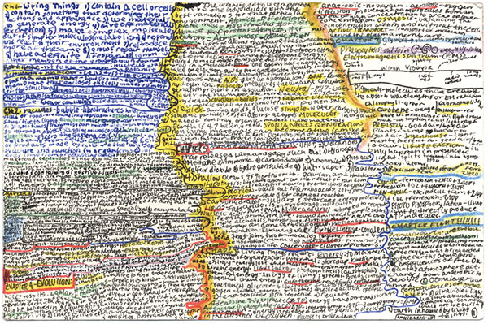
While I don't recommend providing something as ugly as that to your audience, a well-formatted cheat sheet can be a great asset. Here's one that was created by the NetTuts team for JQuery developers:
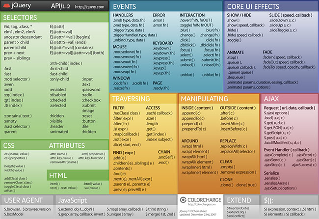
Even if that image is completely gibberish to you, it would be valuable for a developer programming JQuery to have over their computer. Obviously this cheat sheet has a ton of formatting and requires more time.
If you are an expert in your field, you should be able to put together something relatively efficiently.